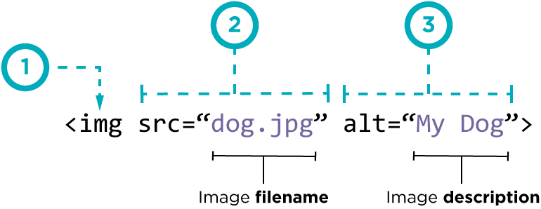

Елементи "Heading" дозволяють вам вказати, що певні частини контенту вашої сторінки є заголовками або підзаголовками. Так само, як у книжці є назва книги, назви розділів і підзаголовки, у HTML-документі це також є. HTML має заголовки шістьох рівнів, h1–h6, хоча зазвичай використовуються перші 3-4.
Чимало контенту на веб-сторінках є списками, і в HTML є спеціальні елементи для них. Розмітка списків завжди має принаймні два елементи. Найпоширеніші типи списків - це нумерований і ненумерований списки:
Елемент img вставляє зображення на сторінку в тому місці, це воно має з'явитися. Це відбувається за допомогою атрибута src (source — джерело), який містить шлях до зображення.
Посилання дуже важливі — це те, що робить мережу мережею! Щоб додати посилання, потрібно використовувати елемент a ("a" скорочено від "anchor" — якір).